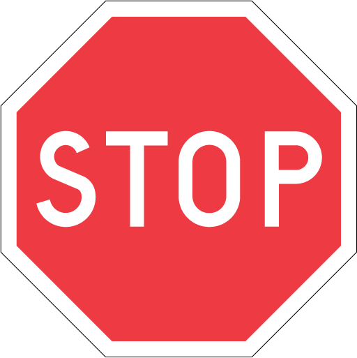

Stopp märke
Vid detta märke, måste alla fordon stanna, även om du cyklar.

Första gången du cyklar i Malmö? Här är några regler och riktlinjer som hjälper dig under din första cykeltur.
Om du är femton år eller yngre, måste du bära hjälm under cykelturen.
Du måste ha cykellampor fram och bak, när det är mörkt ute.
Det finns inget krav på att cyklister måste ha reflexer, men det gör dig synlig i mörker. Bilar har ofta svårt att uppmärksamma cyklister.
Du måste ha ringklocka på din cykel.
Det finns krav på att det måste finnas en broms på din cykel.
Vid detta märke, måste alla fordon stanna, även om du cyklar.
På en gångbana får du cykla, men du måste ta hänsyn och anpassa din hastighet till de gående.
Det här märket ger gående tillträde att korsa övergångstället. Cyklister måste leda sin cykel över. Y
Du får cykla på detta området, men du måste anpassa hastigheten till gående.
Här måste bilar vänta med att köra tills du cyklat över överfarten.
Bredvid det här märket, är vägen tillängnad och delad till cyklister och gående. Det står även utskrivet vilken sida gående ska gå på och cyklister ska cykla på.
This sign tells all vehicle, including bicycles, that driving is not allowed.
Den här vägen är för gående, du får inte cykla här.
När ljusen slår rött eller gult måste du stanna, är ljuset grönt får du köra.
"Don´t drink and drive"
Det är inte olagligt att cykla när du är berusad. Men om du är för berusad för att cykla, ska du inte cykla. Du kan få böter och bli av med ditt körkot. Ta ansvar för din och andras säkerhet!
Oturligtvis finns det tjuvar i Malmö. Lås därför din cykel.
Under vinter halvåret är det halt på vägarna, var därför försiktig när du cyklar.
Eftersom bilar inte har blinkers, används armarna och händerna istället för att visa om du ska svänga höger eller vänster.
Du bör använda cykelvägarna, är detta inte möjligt kan du cykla på höger sida på vägarna för bilarna. Om du är yngre än eller åtta år får du cykla på gångbanan.
Du ska alltid cykla på höger sida. På vägen och cykelbanan.
Du kan parkera din cykel överallt, men leta efter parkerings skyltar, de kan meddela dig om att det är föjbjudet att parkera där. Det brukar finnas speciella parkerings platser för cyklar.
I situationer när du kommer från cykelbanor till vägen, måste du väja för bilarna. Finns det inga bilar, kan du köra.
I vissa fall, finns det cykel passage som är skapta för att korsa vägen via cykel. Ibland finns det trafik ljus som kontrollerar trafiken. Finns det inte, bör du försöka skapa ögonkontakt med bilföraren. I denna situation har du ingen skyldighet att stanna eller väja för bilen, vilket de heller har skyldighet till. Detta bestäms genom ögonkontakt mellan cyklist och bilist. Du bör sakta ner farten när du närmar dig cykelpassagen, det finns bilar som inte tar hänsyn till cyklar.
Källor: Transportstyrelsen och Trafikverket